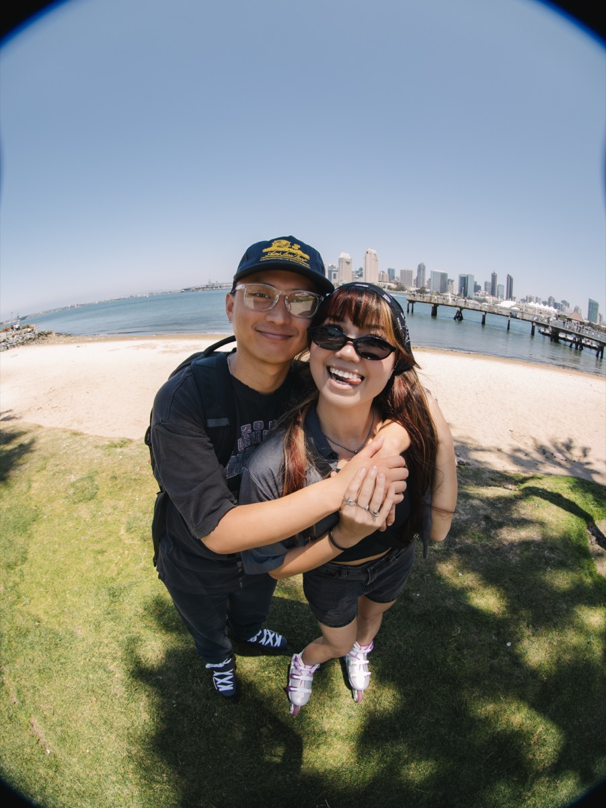

I'm a UX designer who transitioned from managing in the sneaker industry, where I spent years leading teams, understanding customer behavior, and delivering high-impact retail experiences. Working on the front lines taught me how people make decisions, what motivates them, and where frustration lives — insights that naturally led me to UX design.
Now, I apply that people-first mindset to designing intuitive, thoughtful digital experiences. I'm driven by curiosity, empathy, and the challenge of turning complex problems into simple, meaningful solutions that genuinely improve users' lives.
